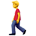
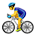

步行约步，用时小时，总计公里，相当于徒步完北京到广州的直线距离；
跑了约步，用时小时，总计公里，相当于跑完了北京二环三环四环长度总和；
骑行约公里，用时小时，相当于骑完了平原版川藏线，恭喜自己完成了一次净化心灵之旅，没毛病。
另外，地面交通工具（汽车火车等）总共乘坐小时，不少于公里，相当于北京到南美洲厄瓜多尔的最短航线距离。
乘坐飞机小时，飞行公里，比中国领土最长点对点距离长一些。
这玩意儿是个人数据，不能测你自己的，你只能望杨兴叹壮士杨